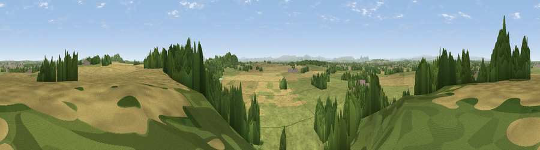

Viewpoint near Myddle
#15302 in England · top 55% of its area beats it · near MyddleThe view, rendered

A 360° render of this exact spot computed from the terrain model, tree cover and land cover — summer colours, afternoon light, calibrated against photographs of famous viewpoints. Real trees, hedges and buildings will differ in detail.
The panorama
Grey silhouette: terrain skyline in each direction (720 bearings, Earth curvature and refraction included). Dashed green: skyline with trees (+15 m) and buildings (+8 m) as obstacles. Blue strip: how far the ground is visible on each bearing.
Where the view opens
Wedge length = distance to the farthest visible ground on that bearing (vegetation-aware). Rings at 10, 25 and 50 km.
What fills the view
50% grassland · 26% cropland · 22% woodland · 2% built-up
Angular shares of the visible panorama (visual magnitude), not map area. Landscape diversity 0.48 (0–1 Shannon).
Key numbers
More beautiful places nearby
The staircase of upgrades: each row has a higher view potential than everything closer. Driving times are estimates from straight-line distance, calibrated against real road routing — check an actual route before setting out.
| Place | Direction | Drive | Score |
|---|---|---|---|
| Pim Hill | SSE · 2 km | ~5 min | 72.5 |
| Grinshill | ENE · 4 km | ~10 min | 75.2 |
| Viewpoint near Weston-under-Redcastle | ENE · 12 km | ~22 min | 77.0 |
| Viewpoint near Marchamley | ENE · 12 km | ~23 min | 77.5 |
| Viewpoint near Plealey | SSW · 19 km | ~32 min | 78.0 |
| Viewpoint near Melverley | WSW · 19 km | ~32 min | 78.2 |
| Earl's Hill | SSW · 19 km | ~33 min | 82.2 |
| Viewpoint near Halfway House | WSW · 20 km | ~33 min | 83.3 |
52.80134, -2.77607 · source: screening · position refined by local search. Computed location — check access rights before visiting.